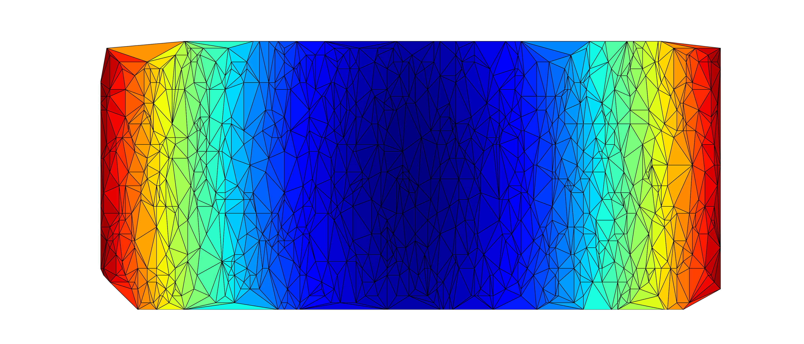

Delaunay Triangulation 是一种空间划分的方法，它能使得分割形成的三角形最小的角尽可能的大，关于 Delaunay Triangulation 的详细介绍，请参考这里，Delaunay Triangulation在很多领域都有应用，科学计算领域它是有限元和有限体积法划分网格的重要方法，除此之外在图像识别、视觉艺术等领域也有它的身影。 贴一段有趣的油管视频，用 Delaunay Triangulation 进行人脸识别的演示：Delaunay Triangulation and Voronoi Diagram in OpenCV 接下来写一下怎么用 Python 实现 Delaunay Triangulation，需要用到的模块有Numpy, Matplotlib 和 Scipy，基本的思路是随机制造几个点，然后利用scipy.spatial.Delaunay对这些点进行处理配对三角形，最后用matplotlib的tripcolor(填充三角形颜色，如果不需要填充颜色，可以用triplot).
下面贴上代码：
|
|
贴上结果：
